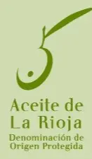
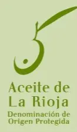

ISUL | Almazara Ecológica de La Rioja
ISUL, organic extra virgin olive oil (EVOO), is the result of a careful family tradition in the heart of the El Cascajo estate, an olive grove nestled in an agricultural estate with shallow limestone soil, located between the Yerga mountain and the Ebro river, in Alfaro (La Rioja). This privileged enclave gives the oil a unique character, forged by the climate, the land and the inherited know-how.
ISUL is a prestigious, authentic oil that combines all the health and culinary properties that define the best extra virgin olive oils. Its quality is not the result of chance, but of a philosophy of cultivation that puts the consumer's health and respect for the environment first.
ISUL's olive groves use organic cultivation methods which, although they reduce the yield in kilos of olives per olive tree and involve higher production costs, guarantee a fruit that is completely free of residues that are harmful to health. This commitment to organic farming not only protects the consumer, but also takes care of the environmental balance, avoiding the contamination of groundwater, air and soil layers with nitrites and other hazardous substances.
 
